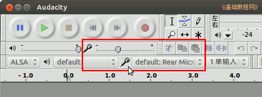
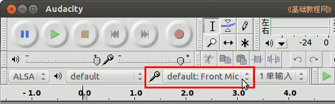
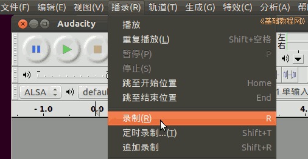
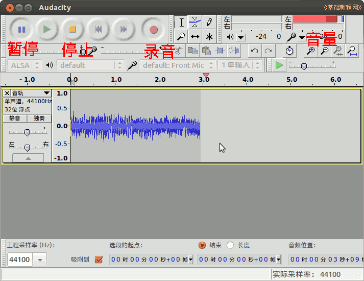
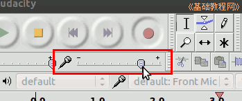
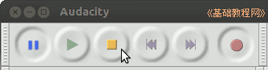
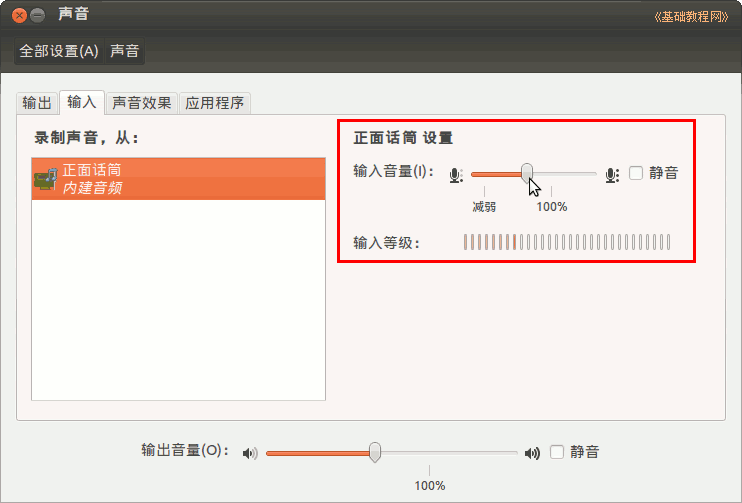

Audacity 音频编辑器教程
作者：TeliuTe 来源：基础教程网
七、话筒录音 返回目录 下一课接上一个话筒，就可以用来录音；
1、录音
1）启动 Audacity ，找到工具栏上的录音工具栏，两个话筒的地方；

2）接好话筒，同时在录音工具栏下边选择相应的话筒，Front是话筒在前面，Rear是插在后面；

3）准备好以后，点菜单“播录—录制”，中间指针开始移动就可以录制了；

4）也可以点播录工具栏中的红色圆点开始录音，点黄色方块按钮停止，点双线暂停录音，再点一下继续录制，右上角显示音量大小；

5）话筒的音量可以点录音工具栏上边的小话筒旁边的标尺来增减，还可以在系统的声音设置中设置；

6）点播录工具栏上的停止按钮，再点菜单“文件—导出”命令，保存录音，如果以后还要处理文件，再点菜单“文件－保存”命令保存一下工程；

7）系统声音中的录音大小设置，在“系统设置—声音—输入”中设置；

本节学习了话筒录音的基础知识，如果你成功地完成了练习，请继续学习下一课内容；
本教程由86团学校TeliuTe制作|著作权所有
基础教程网：http://teliute.org/
美丽的校园……
转载和引用本站内容，请保留版权信息和本站链接。